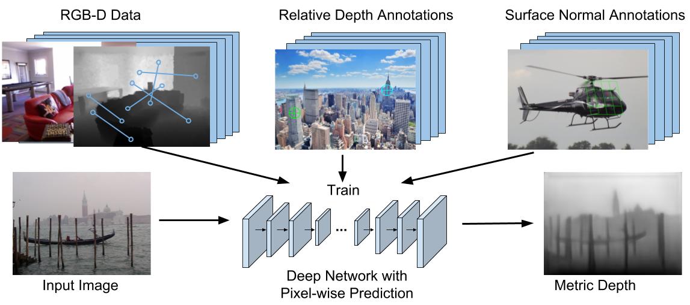

Figure 1: Building on top of the work of Chen et al. [1], we crowdsource annotations of surface normals
and use the collected surface normals to help train a better depth prediction network.
Figure 2: Some examples of the surface normal annotations from the SNOW dataset.
The surface normal is drawn as a red arrow, and the tangent plane a green grid.
|
AbstractWe study the problem of single-image depth estimation for images in the wild. We collect human annotated surface normals and use them to help train a neural network that directly predicts pixel-wise depth. We propose two novel loss functions for training with surface normal annotations. Experiments on NYU Depth, KITTI, and our own dataset demonstrate that our approach can significantly improve the quality of depth estimation in the wild.Publication
| ||
DatasetDownload. [Images][Toolkit]CodeCode for training and evaluation. [link]Reference[1] W. Chen, Z. Fu, D. Yang, and J. Deng. Single-image depth perception in the wild. In Advances in Neural Information Processing Systems, pages 730–738, 2016. | ||
CONTACTPlease send any questions or comments to Weifeng Chen at wfchen@umich.edu. |